背景
臺中國家歌劇院為台灣三大藝文展演平台，其建築的特色更是國家景觀地標之一，在官網改版前因網站架構及節目檢索無法滿足陸續新增的節目，隨著內部管理收納沒有共識使網站結構層次越發複雜，像是類似的訊息卻分散在不同的資訊結構底下，造成資訊查找不易。
臺中國家歌劇院為台灣三大藝文展演平台，其建築的特色更是國家景觀地標之一，在官網改版前因網站架構及節目檢索無法滿足陸續新增的節目，隨著內部管理收納沒有共識使網站結構層次越發複雜，像是類似的訊息卻分散在不同的資訊結構底下，造成資訊查找不易。
了解目前的業務需求、使用者的需求
內化品牌調性、增加內容擴充彈性、優化功能動線
提煉品牌精神建構設計語言，將資訊架構梳理整併，功能使用 wireframe 確認
最終使用 prototype 將 mockup 呈現整體的設計
不再強調建築外觀的曲線設計，沉浸內部空間感受，發展整體介面風格。

重新梳理網站架構及上稿內容範本
歌劇院的官網宗旨在於服務民眾，能第一時間看清楚選單資訊非常重要，使用者瀏覽選單時，適當設計可置放行銷Banner 的位置供管理人員做推廣，若不需使用版位能做為選單情境圖，幫助瀏覽時能放鬆心情。
 

歌劇院的節目五花八門，觀眾的口味也五花八門，為了幫助民眾查找便利，提供多角度的檢索功能能更快選擇喜愛的節目。